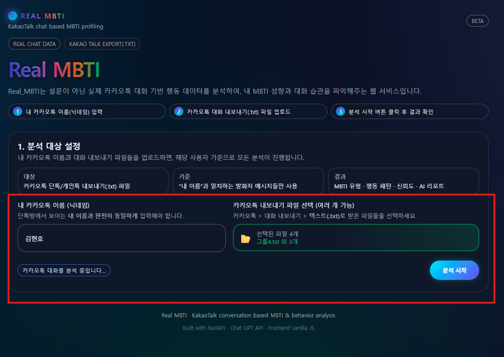
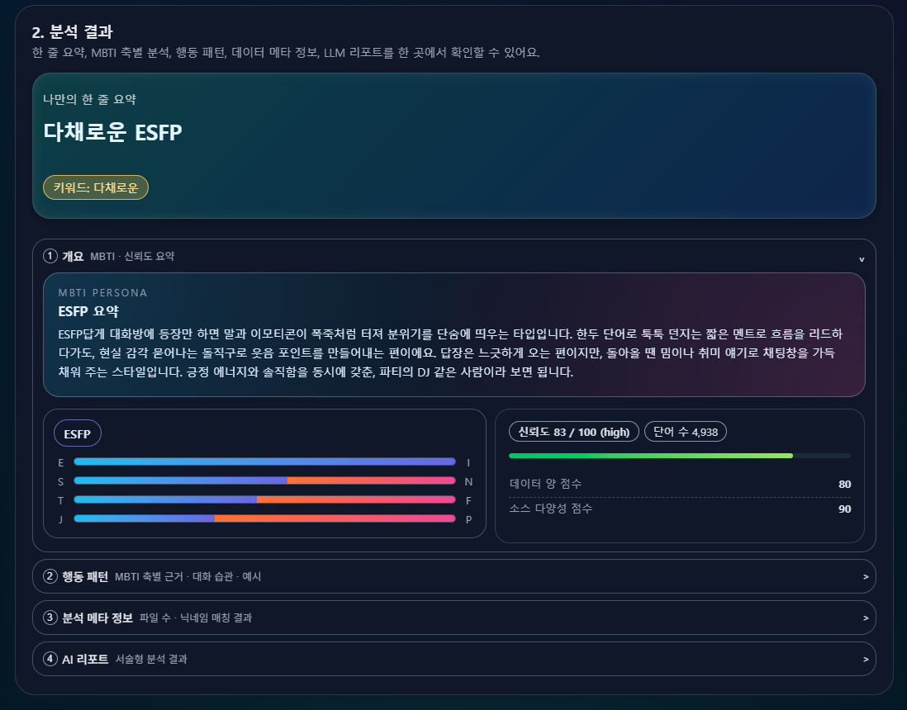
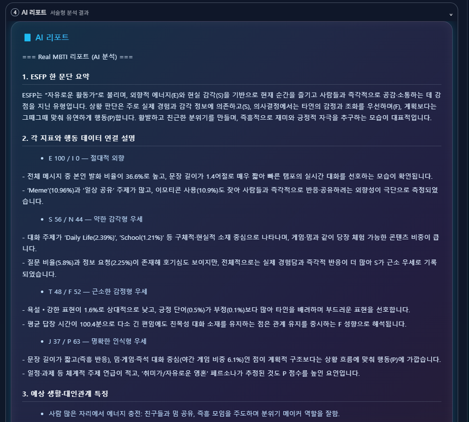

설문이 아닌 실제 카카오톡 대화 데이터로 사람의 성향을 분석하는 행동 기반 MBTI 시스템
메시지 길이, 감정 표현, 질문 비율, 반응 패턴 등 행동 지표(Behavioral Features)를 추출하고 생성형 AI로 사람이 읽기 쉬운 리포트와 페르소나를 자동 생성합니다.
김현호 / 컴퓨터소프트웨어공학과
저는 “사람의 행동 데이터로 무엇을 설명할 수 있는가”에 관심을 두고
데이터 분석과 생성형 AI를 결합한 서비스를 설계·구현하는 개발자입니다.
Real MBTI는 단순한 기능 구현을 넘어,
분석 근거를 설명할 수 있는 AI 시스템을 목표로 제작되었습니다.
설문 응답은 순간의 기분, 자기 인식 오류, 사회적 바람직성에 의해 왜곡됩니다.
실제 대화에서 드러나는 말투, 감정, 참여도는 의식적으로 조작하기 어려운 진짜 성향에 가깝습니다.
메시지 길이, 질문 비율, 감정 표현, 참여도 등을 Feature로 추출하여 MBTI 축(E/I, S/N, T/F, J/P)을 점수화합니다.
단순 결과가 아닌 “왜 이런 성향이 나왔는지”를 문장 근거로 함께 제공합니다.
대화량, 파일 수, 데이터 분산도를 기반으로 결과의 신뢰도를 수치화합니다.
ChatGPT API를 활용해 분석 결과를 사람이 읽기 쉬운 리포트와 MBTI 페르소나 개요로 자동 생성합니다.
카카오톡 대화 내보내기 파일(.txt)을 업로드하고 분석을 시작합니다.

실제 대화에서 추출한 행동 지표를 기반으로 MBTI를 분석합니다.

생성형 AI가 분석 결과를 자연어 리포트와 페르소나로 정리합니다.

※ 데모 서버는 과제 제출 및 시연 목적의 서비스이며, 업로드된 파일은 분석 후 별도 저장하지 않습니다.
Infrastructure
AWS EC2 (Linux)
Operations
환경변수 기반 API Key 관리
외부 접속 가능한 실서비스 형태 운영
이 프로젝트를 통해 단순한 MBTI 분류가 아닌, 데이터 → 정제 → 해석 → 설명까지 이어지는 분석 파이프라인을 직접 설계하고 구현했습니다.
향후에는 음성·이미지·장기 대화 데이터까지 확장하여 보다 정밀한 성향 분석 시스템으로 발전시킬 계획입니다.